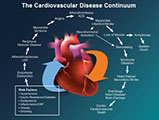

SMART MEDICAL ACCESS SYSTEM
Cardio-Vascular Diseases
Cardiovascular disease (CVD) is a class of diseases that involve the heart or blood vessels.[1] Common CVDs include: ischemic heart disease (IHD), stroke, hypertensive heart disease, rheumatic heart disease (RHD), aortic aneurysms, cardiomyopathy, atrial fibrillation, congenital heart disease, endocarditis, and peripheral artery disease (PAD), among others.The underlying mechanisms varies depending on the disease in question. IHD, stroke, and PAD involve atherosclerosis. This may be caused by high blood pressure, smoking, diabetes, lack of exercise, obesity, high blood cholesterol, poor diet, and excessive alcohol, among others. High blood pressure results in 13% of CVD deaths, while tobacco results in 9%, diabetes 6%, lack of exercise 6% and obesity 5%. Others such as RHD may follow untreated streptococcal infections of the throat. For more information click here
Causes
Tobacco Use: Approximately 10% of cardiovascular disease is attributed to smoking
Physical Inactivity: Insufficient physical activity (defined as less than 5 x 30 minutes of moderate activity per week, or less than 3 x 20 minutes of vigorous activity per week) is currently the fourth leading risk factor for mortality worldwide.
Diet: High dietary intakes of saturated fat, trans-fats and salt, and low intake of fruits, vegetables and fish are linked to cardiovascular risk. Socio Economic Disadvantage: Cardiovascular disease affects low- and middle-income countries even more than high-income countries. Air Pollution: Particulate matter has been studied for its short- and long-term exposure effects on cardiovascular disease. For more information click here
Prevention Tips
A low-fat, high-fiber diet including whole grains and fruit and vegetables.
Tobacco cessation and avoidance of second-hand smoke.
Limit alcohol consumption to the recommended daily limits. Consumption of 1–2 standard alcoholic drinks per day may reduce risk by 30%.
Decrease body fat if overweight or obese
Increase daily activity to 30 minutes of vigorous exercise per day at least five times per week (multiply by three if horizontal).
Reduce sugar consumptions.
Decrease psychosocial stress. For more information click here
Know About
Causes
Prevention